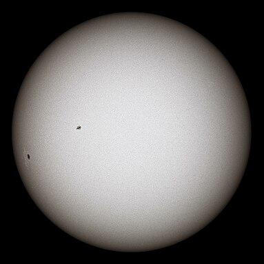

Moon

The Moon is Earth's only natural satellite. It orbits around Earth at an average distance of 384,400 km (238,900 mi), or about 30 times Earth's diameter, having a sidereal period of 27.3 days and a synodic period of 29.5 days. The Moon faces Earth always with its near side by having a rotation period that equals its orbital period, resulting from being tidally locked to Earth.
Sun

The sun is an ordinary star, one of about 100 billion in our galaxy, the Milky Way. The sun has extremely important influences on our planet: It drives weather, ocean currents, seasons, and climate, and makes plant life possible through photosynthesis.
Earth

Earth is the third planet from the Sun and the only astronomical object known to harbor life. This is enabled by Earth being a water world, the only one in the Solar System sustaining liquid surface water.